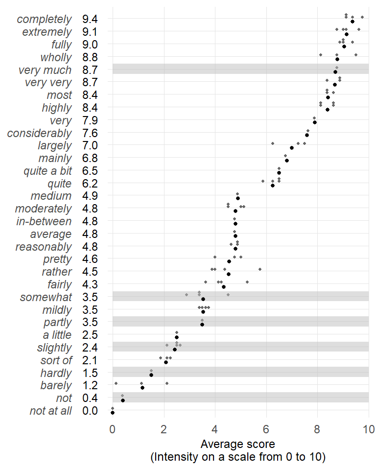

![]()
R setup
library(tidyverse)
library(lattice)
source("C:/Users/ba4rh5/Work Folders/My Files/R projects/my_utils_website.R")
directory_path <- "C:/Users/ba4rh5/Work Folders/My Files/R projects/_lsoenning.github.io/posts/2024-03-01_sharoff_2018/"library(tidyverse)
library(lattice)
source("C:/Users/ba4rh5/Work Folders/My Files/R projects/my_utils_website.R")
directory_path <- "C:/Users/ba4rh5/Work Folders/My Files/R projects/_lsoenning.github.io/posts/2024-03-01_sharoff_2018/"I recently did a literature survey on how ordinal rating scale data are handled in linguistic research (see Sönning 2024). It included 4,441 publications from 16 linguistic journals (published between 2012 and 2022), covering a broad range of sub-disciplines. It turned out that a vast majority of researchers take a numeric-conversion approach: They translate the response categories into numeric scores and then analyze the data as though ratings were actually collected on a continuous scale. Further, almost all of these studies use a linear scoring system, i.e. equally-spaced integers, to analyze their data. The current blog post is devoted to Sharoff (2018), the only paper in our survey that used a custom set of scale values for the ordered response set.
In what follows, we will use the term scoring system (see Labovitz 1967) to refer to the set of values that are used to represent the ordinal responses. Analyses based on scoring systems involve the calculation of averages or the use of ordinary (mixed-effects) regression. This practice, which is widespread in linguistics (see Sönning et al. 2024; Sönning 2024), has sparked heated methodological debates. The widely accepted belief that an interval-level analysis of ordinal data is inappropriate goes back to an influential paper by Stevens (1946), who proposed a taxonomy of scale types (nominal, ordinal, interval, and ratio) along with “permissible statistics” for each. Among the caveats of the numeric-conversion approach is the fact that distances between consecutive categories are usually unknown. In particular, when all scale points are verbalized, the perceived distance between categories will depend on how informants interpret the labels. It turns out that experimental research has produced insights into the perception of quantificational expressions that are frequently used to build graded scales.
Psycholinguistic research on intensifiers, for instance, has shown that English native speakers recognize similar increments in intensity between hardly-slightly and considerably-highly (Rohrmann 2007). Such insights can inform the design and analysis stage of a study. Earlier methodological work has mainly focused on scale construction, i.e. the selection of approximately equal-interval sequences (e.g. Friedman and Amoo 1999; Rohrmann 2007; Beckstead 2014). As discussed in Sönning (2024), psychometric scale values can also suggest more appropriate scoring systems for data analysis. As our literature survey shows, custom scale values are virtually never used in current research, and only few methodological studies acknowledge this possibility (Labovitz 1967, 155; Worcester and Burns 1975, 191). Instead, researchers almost universally assign equally-spaced integers to the categories. The only exception we have found in our survey is the study by Sharoff (2018).
A number of studies have looked into how speakers interpret intensifying adverbs. Here, we bring together results from three studies that used similar methods to scale the meaning of relevant adverbs (Matthews et al. 1978; Krsacok 2001; Rohrmann 2007). To measure the relative level of intensity assigned to a specific expression, subjects are typically asked to locate it on an equally-apportioned 11-point scale. We map this scale to the [0,10] interval. Figure 1 gives an overview of and summarizes the findings reported in the three studies:

We can make an attempt to roughly pin down the psychometric scale values that may be considered good approximations for Sharoff (2018)’s response categories. We start by locating the appropriate averages in Figure 1:
8.7 very much3.5 somewhat3.5 partly2.4 slightly1.5 hardly0.4 notThen we average across double designations (e.g. hardly/not; somewhat/partly). This allows us to establish an empirically grounded spacing between the response options. Figure 2 compares these relative distances to the ones used by Sharoff (2018). It lends empirical support to the custom scores used in that study: Three (roughly) equally-spaced categories at the lower end of the scale, with a disproportionate gap to the highest response option. In fact, the psychometric evidence would have licensed a more pronounced numeric gap between very much and somewhat/partly, roughly:
2.0 “strongly or very much so”0.7 “somewhat or partly”0.4 “slightly”0 “none or hardly at all”More importantly, however, it is clear that it was appropriate for Sharoff (2018) to use a custom scoring system – the default linear set (e.g. 0, 1, 2, 3) would have misrepresented the way speakers interpret the response labels.
We have seen how experimental findings may inform the arrangement of custom scoring systems for the analysis of ordinal rating scale data. The fact that researchers almost exclusively rely on equal-spaced integers is clearly unsatisfactory. Following the good example of Sharoff (2018), more frequent use should be made of custom scoring systems. This methodological topic is discussed much more detail in Sönning (2024), where further psychometric insights are summarized and the inherent limitations of the numeric-conversion approach to ordinal data are given due consideration. The paper discusses measurement-theoretic and statistical issues surrounding this strategy and clearly states their consequences for the analysis and interpretation of rating scale data.
@online{sönning2024,
author = {Sönning, Lukas},
title = {Custom Scoring Systems in Ordinal Data Analysis: {A} Tribute
to {Sharoff} (2018)},
date = {2024-02-29},
url = {https://lsoenning.github.io/posts/2024-03-01_sharoff_2018/},
langid = {en}
}